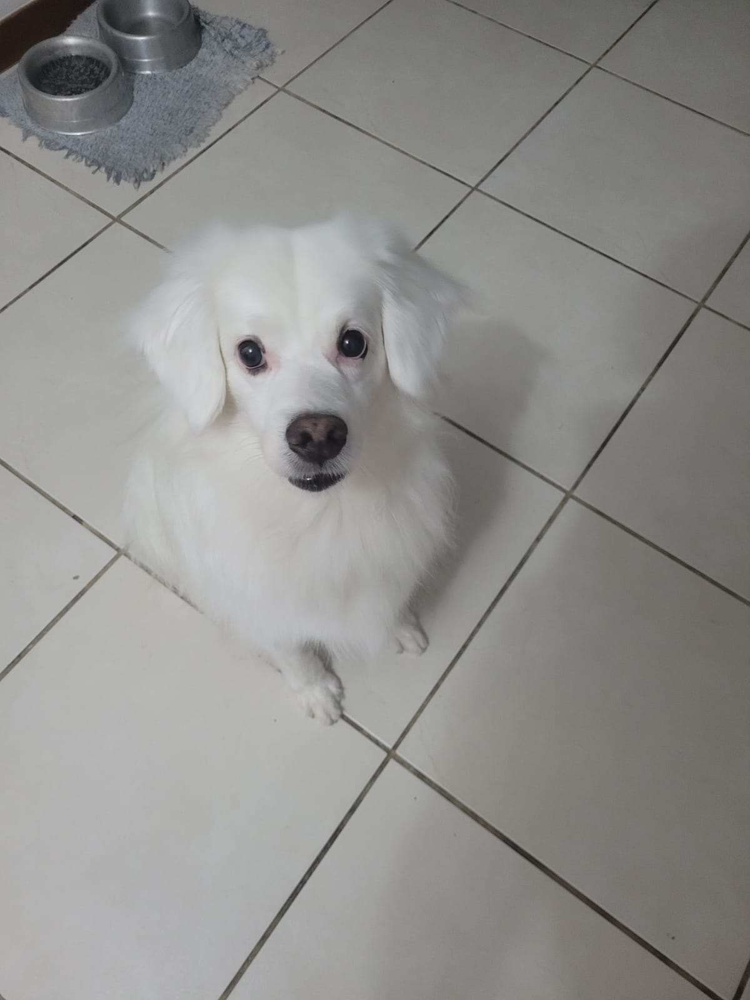
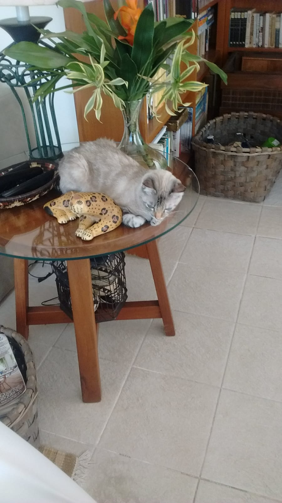

João Pedro Figueiredo Terra
Sobre
Interesses
Instituição
Tutorial
Currículo
Não sou bom com descrições, muito menos descrições sobre mim.
Meus interesses
Gosto de video-games, música, e ler.
Imagens de meus animais

